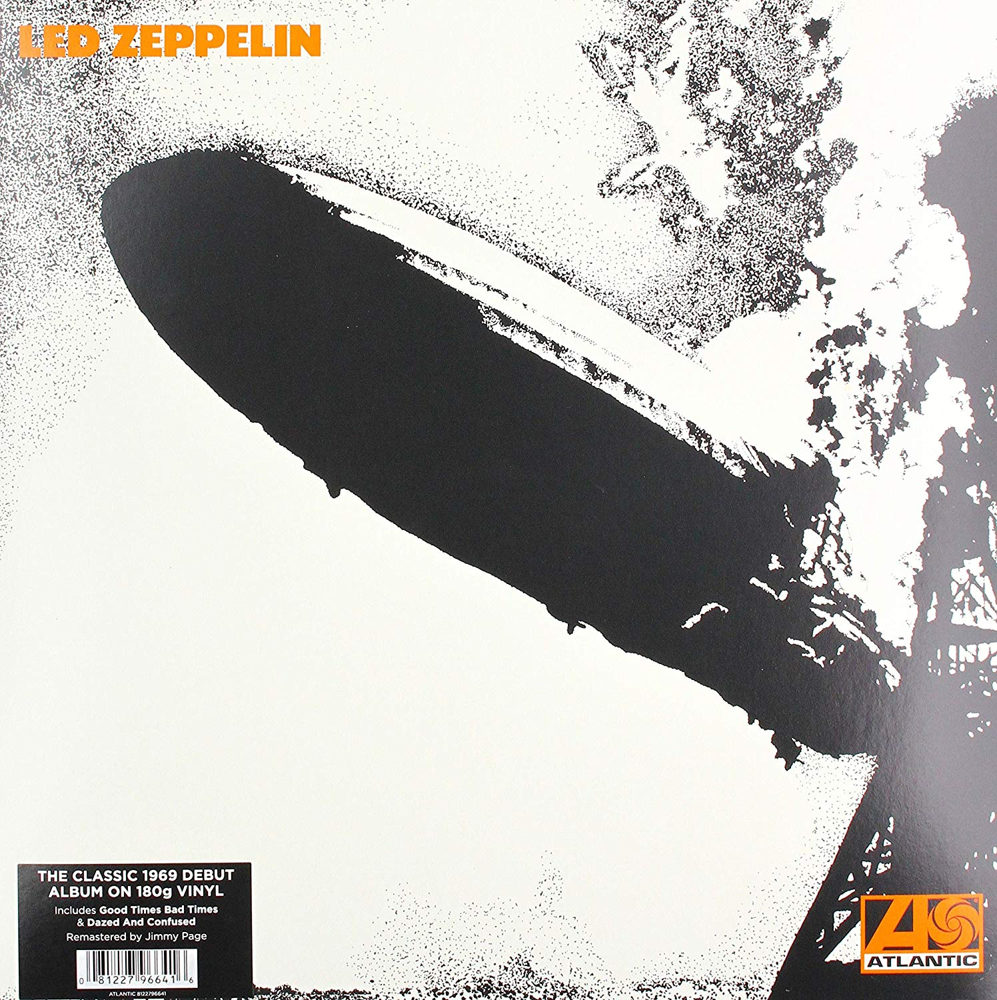
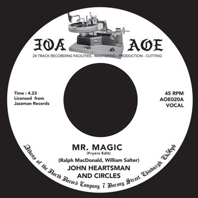
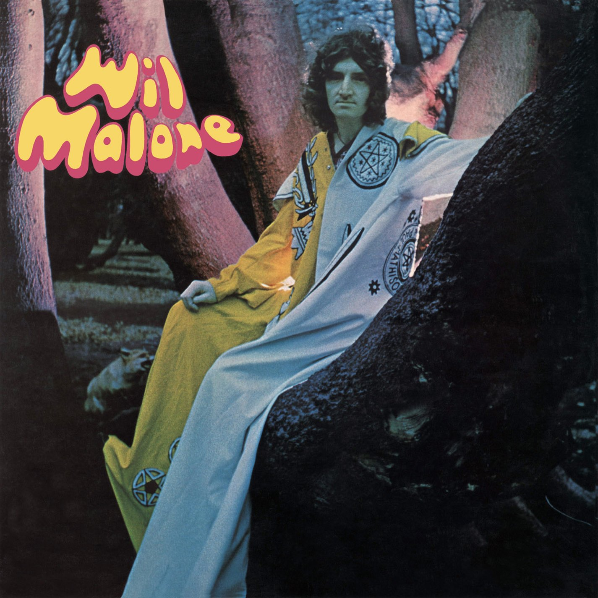

Top 5 Discos de Vinilo
Recopilación de los mejores 5 discos de 2019
| Puestos | Discos | Descripcion |
| 1º | Never Mind the Bollocks es el único trabajo de los Sex Pistols. Vinilo de 1977 editado por Virgin Records, made in England. | |
| 2º | = | Never Mind the Bollocks es el único trabajo de los Sex Pistols. Vinilo de 1977 editado por Virgin Records, hecho en England.
El 3 de Junio se reeditan los primeros tres álbumes remasterizados por Jimmy Page, acompañados de material inédito Se publicarán múltiples formatos: CD, Vinilo, Álbum digital y Caja Súper Deluxe en Edición Limitada John Bonham, John Paul Jones, Jimmy Page y Robert Plant formaron Led Zeppelin en 1968. En la siguiente década la banda se convirtió en uno de los grupos más influyentes innovadores y de mayor éxito de la música moderna, vendiendo más de 300 millones de álbumes en todo el mundo. Sus canciones son de las más celebradas de la historia del rock ‘n’ roll y a día de hoy tiene eco entre fans de todas las edades en todo el planeta. No importa cuantas veces hayas escuchado su música porque Led Zeppelin nunca han sonado como lo harán a partir de ahora. |
| 3º | Los álbumes remasterizados de The Beatles, publicados en CD en 2009 y para descarga digital exclusivamente en iTunes en 2010, se lanzan ahora en una esperada edición en vinilo stereo el 13 de noviembre de 2012. Fabricados en vinilo 189 gramos con la máxima calidad de audiófilo y reproducciones facsímil de los discos originales, los 14 álbumes recuperan su gloria original con todos sus detalles, incluído el poster del grupo en The White Album, los recortables de Sgt. Pepper’s Lonely Heart Club Band y las fundas interiores especiales de los discos. Cada LP estará disponible individualmente y todos juntos en una caja de edición limitada a 50.000 ejemplares con un libro de 252 páginas. | |
| 4º |  | Entre 1964 y 1972, Wilson Pickett se estableció como uno de los mejores hombres del alma de todos los tiempos con una serie de éxitos incendiarios de pop y R&B como In the Midnight Hour, Land of 1,000 Dances, Mustang Sally y Funky Broadway. Pero la carrera abrasadora de Wicked Pickett no se detuvo cuando dejó Atlantic Records. Comenzando con el Sr. Magic Man de 1973, Pickett grabó cuatro álbumes de estudio conmovedores para RCA Records, donde, en dos años extremadamente productivos, logró sus últimos éxitos Hot 100, así como una serie de éxitos en las listas de R&B. Sin embargo, la discografía RCA de Pickett ha sido casi ignorada en la era de los discos compactos. Ahora, Real Gone Music y Second Disc Records se enorgullecen en presentar la primera aparición en CD de los cuatro platillos de estudio de RCA chispeantes y funky de Wilson Pickett en Mr. Magic Man: The Complete RCA Studio Recordings. Este paquete de 2 CD incluye Mr. Magic Man (1973), Miz Lena s Boy (1973), Pickett in the Pocket (1974) y Join Me and Let s Be Free (1975) más cuatro bonos raros, nunca en CD solteros para pintar un retrato completo de esta emocionante era. Para estas sesiones, Pickett se asoció con productores como Brad Shapiro, Dave Crawford y Yusuf Rahman, y grabó en lugares legendarios o Muscle Shoals Sound y Sigma Sound Studios de Filadelfia, donde Pickett había grabado algunos de sus lados más indelebles del Atlántico. La colección toma su título del exitoso sencillo escrito por el equipo de Bobby Eli y Vinnie Barrett (Sideshow, Love Won t Let Me Wait) que capturó a Pickett en un suave ritmo de Philly. Vic Anesini en Battery Studios de Sony ha remasterizado esta colección única en su tipo, mientras que Joe Marchese ha escrito las notas de línea. |
| 5º |  | Lanzamiento 2012. Este álbum fue lanzado en 2009 a través de Record Collector en el Reino Unido y ahora está disponible para la venta minorista. Edición de vinilo de 180 gramos para audiófilos de este muy buscado álbum de 1970. Un clásico psicológico que recuerda el lado trivial de Donovan. Poner el ácido en "Acid Folk". |